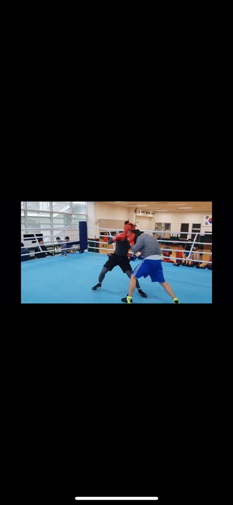

3nd Sports
복싱

복싱을 시작하게된 계기, 느낀점
어렸을적부터 mma를 수련해서 입식 타격 역시 자신이 있었다.
중학교를 농소중학교라는 곳에 입학하게 되었고 그 중학교 대표 스포츠가 복싱이었다.
복싱부에 지원하게 되었고 몇년간 선수로 활동하였다.
처음에는 적응이 잘 안되었다.
내가 배운 입식 타격은 mma로 발을 함께 쓸수있었지만 복싱은 오직 주먹이었다.
조금 다른 룰에 애를 먹었지만 남들보다 먼저 수련하고 오래 수련해서 더 나은점이 많았다.
맞는 것에 대한 두려움이 없었고 주먹을 꽂는다는 느낌을 남들보다 잘 알았다.
그래서 더욱 빨리 적응하게 되었다.
중학교 3학년에는 많은 시합에 입상하였고 주니어 국가대표가 되었다.